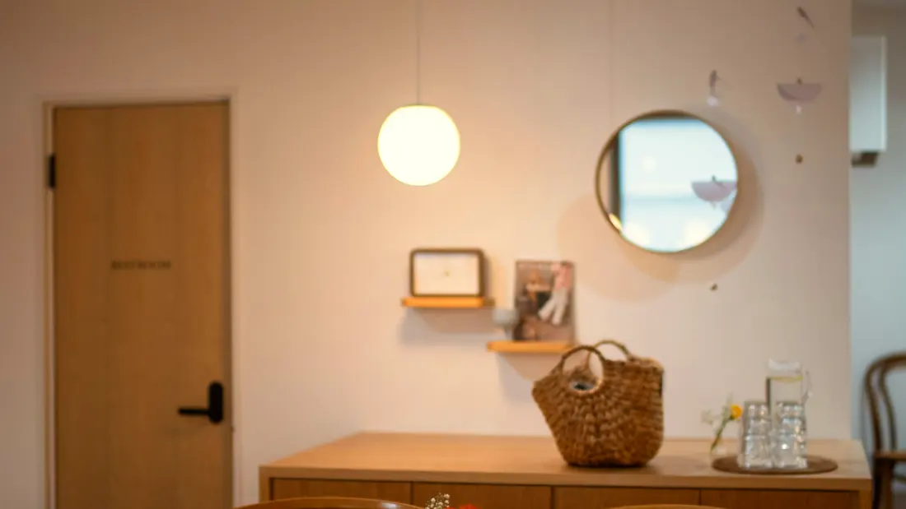
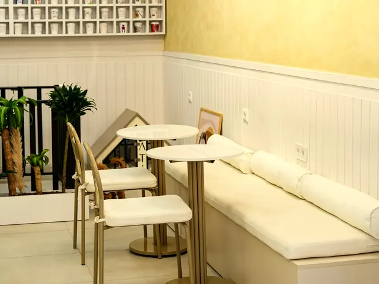
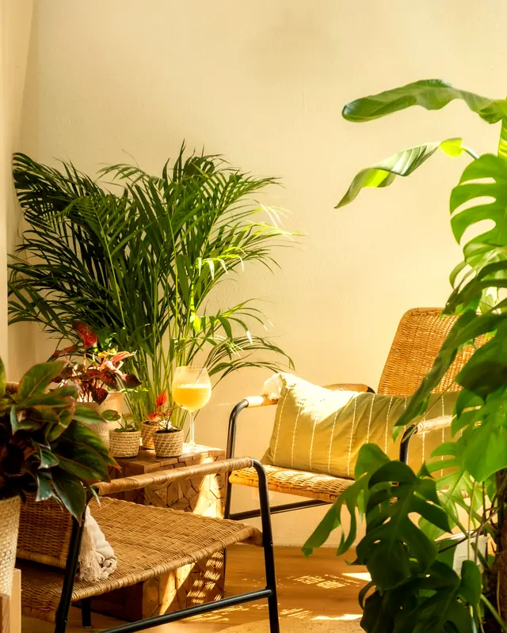
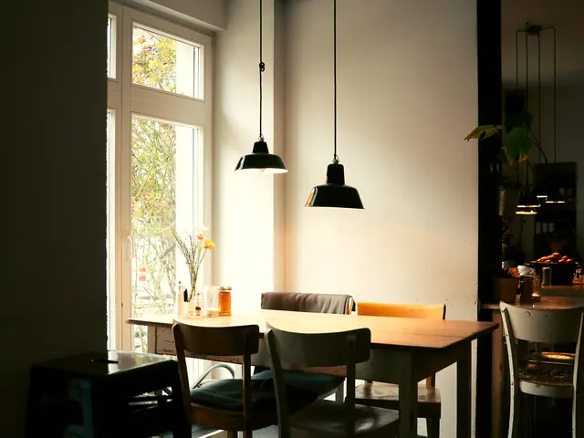
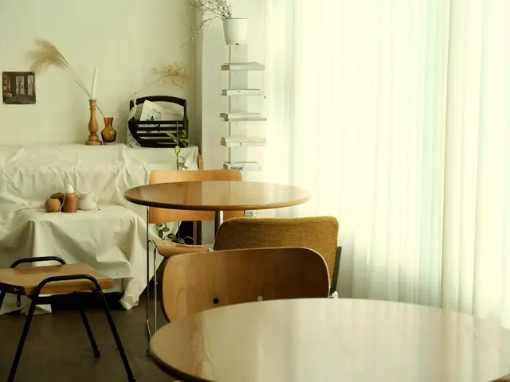

Альметьевск · ул. Ленина, 55
МурмурКофейня, где тихо, тепло и пахнет свежим зерном.
5,0из 5
528 человек поставили
этому месту пятёрку
Яндекс.Карты,
сентябрь 2026 · 241 из них написал отзыв
Пн–Пт 07:45–22:00 · Сб–Вс 09:00–22:00
Открываемся раньше всех на улице — к первой смене.

«Ехали из Уфы в Москву, сделали крюк 30 км. Кофе этого стоил.»
528 голосов.
Ни один из них не наш
Это настоящие отзывы с Яндекс.Карт — с именами и датами. Мы ничего не сочиняли и ничего не переписывали, только сократили длинные.
прочитано 0 из 528
«Лучшая кофейня в Альметьевске, даже в Казани такой нет. Обслуживающий персонал — очень милые девушки.»
«Моя любимая кофейня! Очень уютно и тепло, по-домашнему))) Кофе на любой вкус и цвет.»

«Очень уютное место, тут светло, просторно, приятное отношение бариста и ну очень вкусный кофе.»
«Каждый год приезжаю из другого города, и уже традиция — заходить в эту кофейню.»
«Стильный интерьер, вежливый персонал, приятная музыка, вкусные десерты и аромаааатнейший кофе.»

«Отличное место! Это одно из немногих дог-френдли мест в нашем городе!»
«Очень приятное и уютное заведение. Особенно места у окон. Брали облепиховый чай.»
«Взяли американо, капучино, раф — всё было вкусно!! Зерно от Ботаники.»

«Любим сюда приходить за уютной атмосферой, лёгким кофе и небольшим перекусом.»
«Вкусный американо, достойный флэт уайт. Приветливые девушки) Рекомендую к посещению.»
«Отличная кофейня в самом центре города, около культурного центра „Әлмәт“.»

«Удобное расположение. Вкусный кофе по приятным ценам. Уютная атмосфера. Приветливый персонал.»
«Очень вкусный кофе! Большое разнообразие, есть даже кофейный глинтвейн.»
«Вкусный кофе, интересный ассортимент вкусов. Даже на кофе с собой сделали сердечко.»
«Уютное кафе. Обязательно к посещению. Персонал вежливый, аккуратный. Везде чисто.»
«Хорошее приятное место! Непринуждённая обстановка, приятный персонал! Рекомендую!»
«Всем рекомендую посетить данную кофейню — самый лучший, самый вкусный, великолепный волшебный кофе.»
Здесь показаны восемнадцать. Остальные пятьсот десять лежат там же, где мы их взяли.
Читать все на Яндекс.КартахЧем это подтверждено
Пятёрка — это итог. Вот то, из чего он складывается каждый день.
- Зерно
- Обжарщик «Ботаника»
- Выпечка
- Своя, каждый день
- Завтраки
- Весь день, не только утром
- С собакой
- Можно — одно из немногих мест в городе
- Веранда
- Летом, на улицу
- Для работы
- Wi-Fi и розетки, можно с ноутбуком
- Навынос
- И доставка по городу
- Премия
- Награда 2ГИС
Как дойти и когда открыто
Альметьевск,
улица Ленина, 55
Центр города, рядом с культурным центром «Әлмәт». Открываемся в 07:45 — раньше всех на улице.
+7 (927) 496-44-46Режим работы
- Понедельник — пятница07:45 — 22:00
- Суббота — воскресенье09:00 — 22:00
Ещё пять Мурмуров в городе
Оценка 5,0 относится к этой кофейне на Ленина, 55 — у остальных точек свои карточки и свои оценки.
- Ленина, 55 эта страница
- Ленина, 24
- Кирова, 13Б
- Проспект Строителей, 20А
- Проспект Габдуллы Тукая, 31В
- Монтажная, 2/3